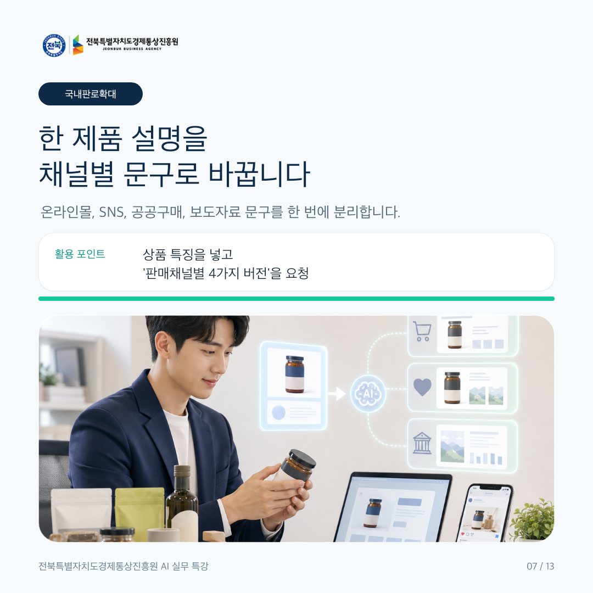
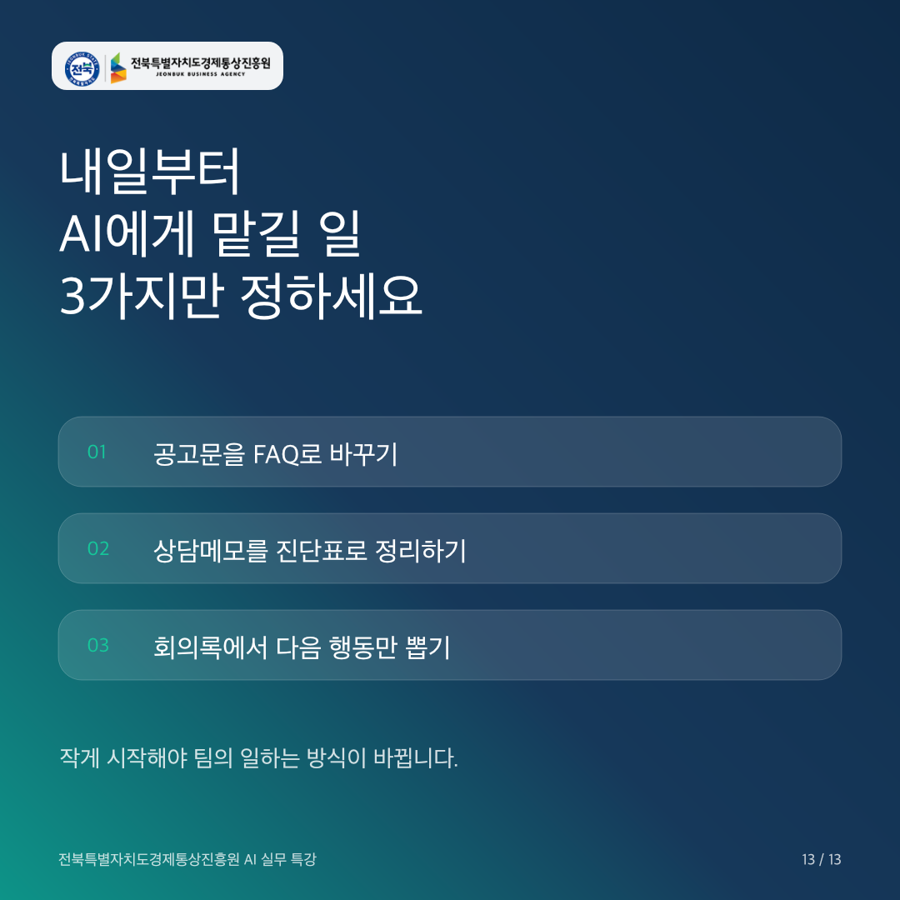

사전 진단
참가자가 줄이고 싶은 반복 업무를 먼저 모아 실습 예제를 기관 업무에 맞춥니다.
준비 항목 보기워크숍에서 가져갈 결과물
실습형 AX 워크숍은 도구 설명보다 결과물에 초점을 둡니다. 참가자는 자기 업무 문장을 AI에게 맡길 수 있는 형태로 바꾸는 경험을 하게 됩니다.
복잡한 공고문을 처음 신청하는 사람도 이해할 수 있는 질문과 답변으로 바꿉니다.
상담메모를 애로, 원인, 지원사업, 추가 질문으로 정리해 후속 조치를 보이게 합니다.
회의 내용을 결정사항, 담당자, 기한, 미확정 쟁점으로 나눠 실행 가능한 표로 만듭니다.
제품 설명이나 사업 안내문을 홈페이지, SNS, 보도자료, 문자용으로 나눠 작성합니다.
Before Seminar
유관기관 세미나에서는 참가자의 업무 맥락이 다를 수 있습니다. 그래서 사전 준비는 계정 안내보다 "무슨 업무를 줄이고 싶은가"를 먼저 모으는 방식이 효과적입니다.
Workshop Flow
참가자는 QR 코드로 들어와 실습 순서를 확인하고, 프롬프트를 복사하고, 결과물을 정리합니다. 강사는 설명보다 실습 흐름을 안정적으로 운영할 수 있습니다.
공고문, 상담메모, 회의록, 보고서, 홍보문구 중 하나를 골라 실습 대상으로 삼습니다.
AI에게 업무 담당자 역할, 대상, 자료, 결과물 형식을 함께 전달하는 법을 익힙니다.
FAQ, 진단카드, 액션리스트, 홍보문구, 1페이지 요약 중 하나를 직접 만듭니다.
과장된 표현, 숫자, 최신 조건, 개인정보, 출처를 점검하며 실무용으로 다듬습니다.
잘 나온 프롬프트와 결과물은 다음 교육, 부서별 워크숍, 기관 AX 프로젝트의 출발점이 됩니다.
Hands-on Practice
아래 버튼을 누르면 업무별 대표 실습이 바뀝니다. 유관기관 세미나에서는 참가자의 사전 진단 결과에 맞춰 이 과제를 3-5개로 압축해 진행합니다.
지원조건, 제출서류, 제외대상을 처음 신청하는 기업 대표도 이해할 수 있게 다시 씁니다.
Prompt Kit
좋은 프롬프트는 긴 주문이 아니라 역할, 맥락, 자료, 출력형식, 검토기준을 한 번에 전달하는 업무 지시문입니다.
지원사업 안내문을 신청자 눈높이의 질문과 답변으로 바꿉니다.
상담 내용을 후속 조치가 보이는 정리표로 바꿉니다.
회의 내용을 담당자와 기한이 있는 실행 목록으로 정리합니다.
Learning Experience
랜딩페이지는 모집용 안내문에서 끝나지 않습니다. 사전 진단, 당일 자료실, 결과물 회수, 후속 제안을 한 흐름으로 묶어 교육 효과를 높입니다.
메일 첨부 대신 페이지 하나에 실습 순서, 예시 자료, 프롬프트, 다운로드 자료를 모읍니다.
사전 진단으로 공고문, 상담, 보고, 홍보 중 실제 수요가 큰 장면을 먼저 고릅니다.
실습 결과물을 근거로 부서별 심화 워크숍, 공용 프롬프트, AX 로드맵을 제안합니다.
After Workshop
참가자가 만든 결과물은 교육 후속 자료가 됩니다. 기관 담당자는 이 결과를 바탕으로 다음 교육, 부서별 컨설팅, 내부 AX 챔피언 과정을 판단할 수 있습니다.
오늘 만든 FAQ, 진단카드, 회의록 액션리스트 중 하나를 팀 회의에 공유합니다.
반복 사용 가치가 높은 프롬프트를 모아 부서 공용 템플릿으로 다듬습니다.
보고서, 상담, 홍보, 회의록 중 가장 효과가 큰 업무를 골라 2차 실습으로 연결합니다.


For Jeonbuk Institutions
기관별 업무 언어를 먼저 모으고, 세미나 당일에는 실습으로 결과물을 만들고, 종료 후에는 부서별 프롬프트와 업무 매뉴얼로 남기는 흐름을 제안합니다.